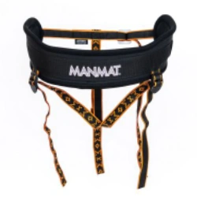
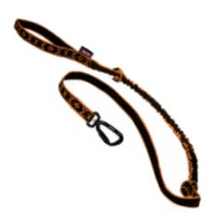
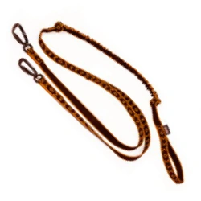
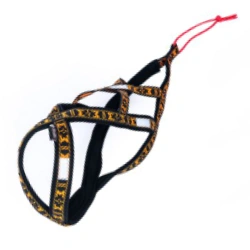

Dogtrekking
Čo je to dogtrekking?
Dogtrekking je extrémny vytrvalostný šport človeka a psa, pri ktorom sa prekonávajú vzdialenosti okolo 100 kilometrov v danom časovom limite. Neľakajte sa – dogtrekking je v skutočnosti turistika so psom. Teda aspoň poväčšinou.
Niekoľko faktov:
1) Pri dogtrekkingu je psovod a pes celý čas spojený. Pes je navlečený do špeciálneho postroja, pripnutý na vodítko, ktoré má psovod v ruke alebo pripnuté k svojmu opasku / sedáku. Pes totiž nesmie byť ani na chvíľu „na voľno“.
2) Jednotlivé podujatia môžu mať rôznu dĺžku trasy. Za „správny“ dogtrekking sa považuje taký, ktorý má aspoň 80km, pri minimálnej dĺžke etapy 40km. Takýto etapový dogtrekking je samozrejme rozdelený do viacerých dní aj s prespávaním v prírode.
3) Tiež poznáme rôzne MINI a MID akcie s podstatne kratšou trasou. Tieto sú samozrejme jednodňové. Ten už spomínaný, „správny“, sa potom označuje LONG.
4) Dogtrekking, ako každý poriadny šport má stanovenú povinnú výbavu, trasa je vopred pripravená a každému účastníkovi je meraný čas.
Zaujal vás dogtrekking?
Tak potom vedzte, že existuje celá veda okolo najvhodnejšej výbavy (postroje, sedáky, vodítka, topánočky pre psov, cestovné misky a kadečo), o typoch a trasách rôznych dogtrekkingových akcií a množstvo nadšencov, machrov, web stránok, fotoalbumov a debát o pripravovaných akciách.
Výbava
Ak sa plánujete dogtrekkingu venovať častejšie, nielen jeden víkend, možno by bolo vhodné postupne zaobstarať dobrú výbavu. Odvďačí sa vám za to váš pes, váš chrbát a zrejme aj váš športový výsledok.
Medzi takúto výbavu patrí (okrem základnej turistickej ako topánky, batoh, vhodné oblečenie alebo aj spacáku a potrieb na viacdňové treky)

Opasok
Opasok slúži na rozloženie ťahu psa na spodnú časť chrbtice. V prednej časti opasku sa nachádza lánko alebo „oko“ pre uchytenie karabíny vodítka. Vďaka tomu má človek pri behu alebo chôdzi voľné ruky.

Sedák
Sedák má rovnakú funkciu ako opasok s tým rozdielom, že sedák má popruhy vedúce medzi nohami človeka. Tieto popruhy zabezpečujú, aby sa sedák pri behu alebo chôdzi neposúval smerom nahor, čo sa pri opasku občas stáva. Popruhy medzi nohami u sedáku sú riešené tak, aby ich tlak šiel na vrchnú časť stehien a tak by nemal prekážať ani mužom.

Vodítko s amortizérom
Vodítko s amortizérom slúži na tlmenie ťahu psa. V prípade, že pes človeka prudko potiahne, vodítkom netrhne ale vďaka vloženej gume do vodítka sa toto trhnutie plynule spomalí.

Rozdvojka s amortizérom
Rozdvojka s amortizérom má rovnakú funkciu ako vodítko s amortizérom, len slúži pre pripnutie 2 psov naraz. Oproti dvom vodítkam s amortizérom má tú výhodu, že psíky rozdvojku nezamotajú. Každé rameno rozdvojky má vlastné tlmenie.

Postroj pre psa
Veľmi dôležitou pomôckou pre každý ťažný šport so psom je postroj pre psa. Pes sa pri ťahu na obojku zbytočne dusí a nemôže sa správne a pohodlne zaprieť do ťahania. Správne zvolenie postroja pre psa je veľmi dôležité. Pre psov väčšej veľkosti a s väčším ťahom sú vhodné postroje s uchytením pri chvoste. Pre malých psíkov alebo pre psov s menším ťahom, prípadne pre psov bežiacich pri nohe sú vhodné postroje s uchytením v strednej časti tela.
Podstatné u postrojov je tiež ich podšitie. Podšitý postroj je pre psa príjemnejší ako nepodšitý, pri ktorom sa mu popruh ľahšie vrezáva do kože a tiež môže psíkovi spôsobiť odreniny.
Topánočky pre psa
Topánočky pre psa v povinnej výbave majú svoj zmysel. Aj keď Váš psík nie je zvyknutý na nosenie topánok, v prípade zranenia po ošetrení labky topánočka zabezpečí aby na rane dobre držal obväz, aby nenavlhol, aby sa do rany nedostali nečistoty. V prípade, že topánočka nie je nepremokavá (čo vo väčšine prípadov nie je), môžete si ku topánočke pribaliť aj sáčok ako medzivrstvu na zranenú labku.
Lekárnička
Lekárnička by mala okrem spomínanej topánočky pre psa obsahovať klasický obväz, elastický obväz (ideálne 2 kusy pre prípad zranenia oboch účastníkov), niekoľko leukoplastov, s vankúšikmi a izotermickú fóliu. Vhodným doplnkom lekárničky sú zicherky a izolačná páska pre nepredvídané malé opravy napr. batohu alebo topánok.
Voda a miska pre psa
Voda je pre človeka aj pre psa samozrejme veľmi dôležitá. Pri kratších tratiach sa môžeme pripraviť na to koľko vody budeme potrebovať aj podľa predpovede počasia. V chladnejších dňoch, alebo keď je oblačno nebudeme potrebovať toľko vody ako v horúci slnečný letný deň. Čiže voda nie je to, kde treba dodržovať len organizátormi udanú povinnú výbavu a šetriť každý gram navyše, ale treba zapojiť aj rozum. Nejdeme predsa poškodzovať zdravie nás a nášho psa, ale užiť si pekný deň v prírode :).
Pri voľbe misky je dobré zvoliť skladnú variantu. Takéto misky pre psíkov sa vyrábajú buď látkové alebo skladacie. Skladacia miska je o niečo ťažšia ako látková, ale narozdiel od látkovej misky po viacerých použitiach nepremokne.
Dogtrekking u nás
Na Slovensku sa v súčasnosti organizujú rôzne malé podujatia s kratšími vzdialenosťami. Komplený zoznam akcií v časti kalendár akcií.
Netrúfate si?
Myslíte, že by ste vedeli stráviť jedno sobotné dopoludnie v prírode a popritom prejsť 15 či 20km po krásnej prírode? To na začiatok úplne stačí!
Nemusíte mať špeciálny postroj, ani zázračné vodítko, drahé turistické topánky ani super profi batoh. Obujte si svoje obľúbené športové topánky, zbaľte čosi do batoha a môžete ísť kráčať! Určite si to užijete – vy aj váš psík. Hlavne nezabudnite to vodítko!
← Späť